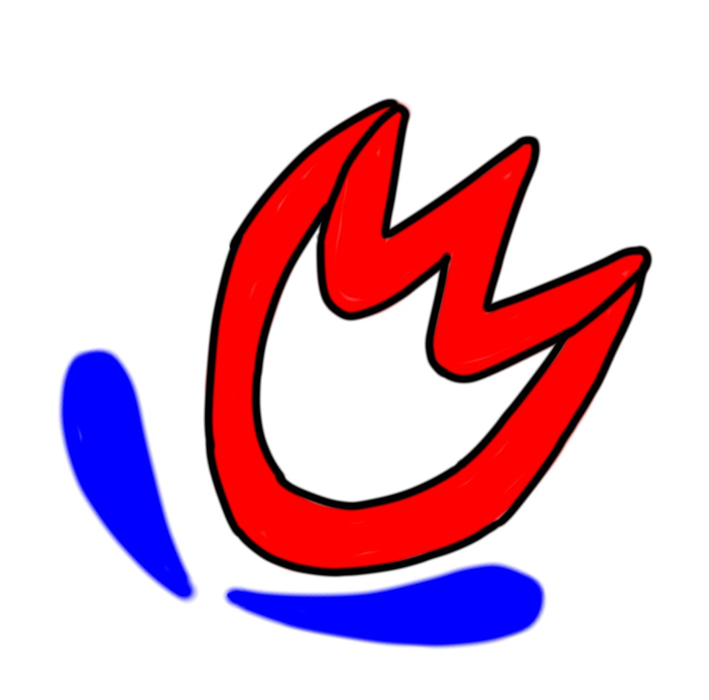
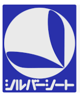
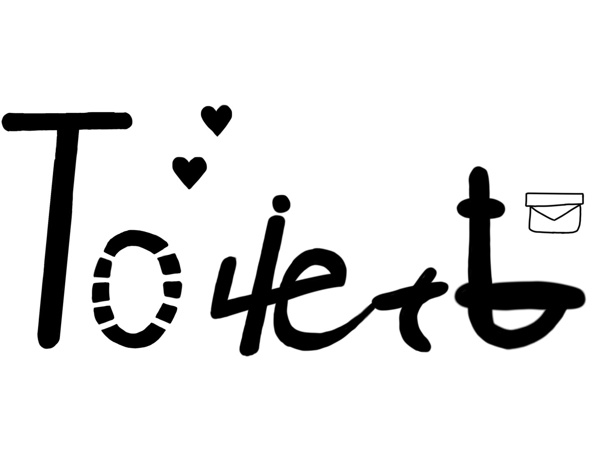
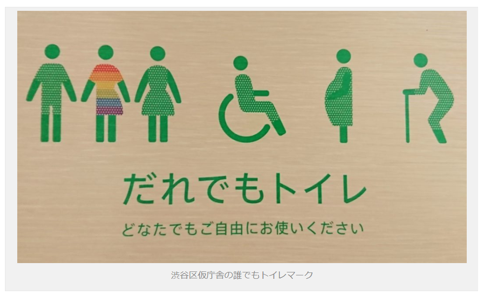
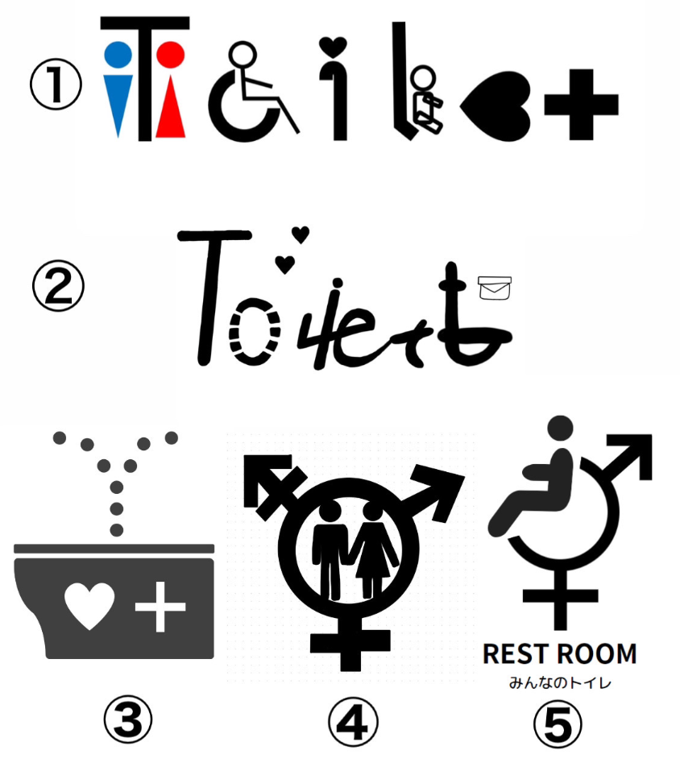
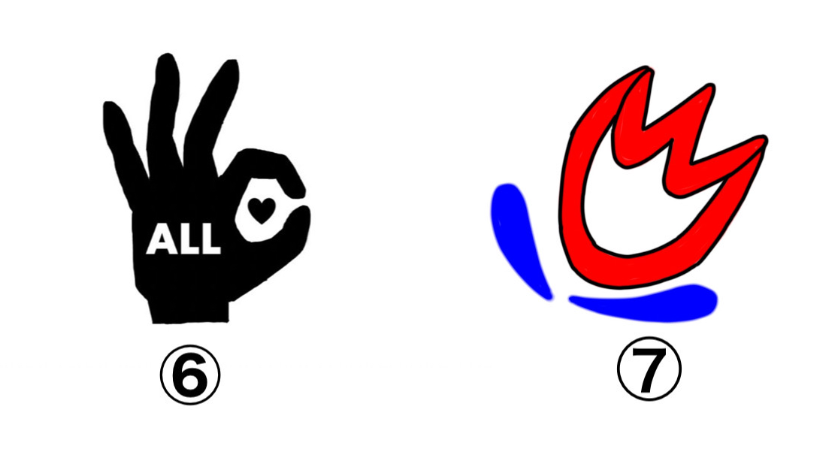
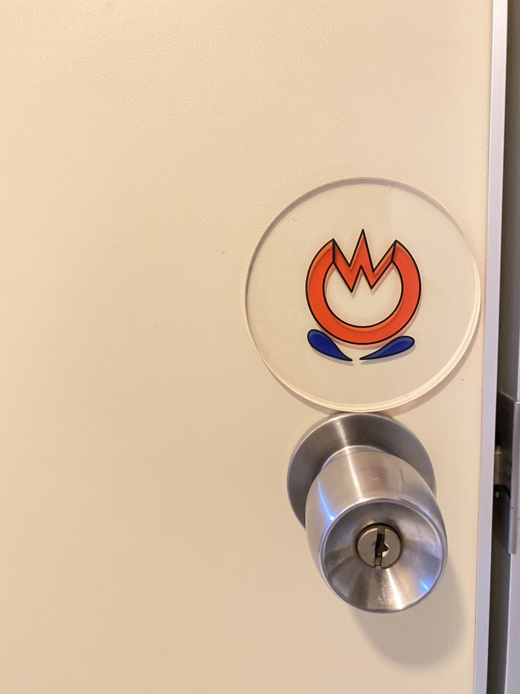

最終課題
一目見て、パット見で分かる多目的トイレのマーク作成
作ることに至った過程
観察課題のグループで、トイレのマークが場に馴染みすぎていて見つからなくて、困っている人がいた。そこから、いろんな場所に馴染み、かつ分かりやすいトイレのマークを作ろうという話になった。
しかし、話が二転三転し、多目的トイレの標識は沢山のことを表していて、ごちゃごちゃしてるという話になった。
そこで、分かりやすく、デザイン性に富んだ、馴染みのあるマークを作ることに至った。
最終的に、世間的に広めやすいマークやデザインを知るために、アンケート調査を行った。
Design１

赤色を女性、青色を男性というトイレマークの色に合わせてみた。
トイレをWCと表すところから、花に見立てて、馴染みやすい一つのマークを考案した。
また、葉の部分は・・・
,
このマークからインスピレーションを受け、優先や思いやりを表現した。
Design２

英語表記の『TOILET』と・・・

『だれでも』を掛け合わせた。
加えて、トイレと分かりやすいように便器の形を表した部分も取り入れた。
アンケート調査
アンケート調査は先ほど述べたように、世間一般に分かりやすく、広まりやすいやすいものを考えたため、
１．馴染みやすそうなデザイン
２、デザイン的に優れていて、分かりやすい
の２項目で調査を行った。
グループのデザイン案


（１番は、一緒に考案しました。３番は、似たような案を出していたので譲りました。）
アンケート調査のgoogleはあみくらさんが作成してくれました。
アンケート結果
52人の方が答えてくれました。(2023年1月18日23:00現在)
結果は、多目的トイレとすぐに分かる１と５を選んだ方が多かったです。
自分の案１を選んでくれた方の感想には・・・
オシャレ・エモい・可愛いくて遠目からだとトイレだとすぐ分からないから、どこにあっても馴染みやすそうだから
トイレのマーク感があまりなくておしゃれな感じに見えるから・目を惹くものだったから
お洒落なデザインで、こういうデザインの方がトイレってわかりづらいからこそ馴染むと思ったから
黒色でどこにでも馴染むし、見やすいデザインだから・トイレを感じさせないデザインだから
自分の案７を選んでくれた方の感想には・・・
何を意味しているのか想像したくなる
と記載されていた。
自分のデザインに興味を持ってもらえたり、誰かの感情を動かせたことが何より嬉しかった。
完成形

【映像】
※同じ班のメンバーの最終課題のページへのリンク
ミル
たねたろー
あみくら
かりん